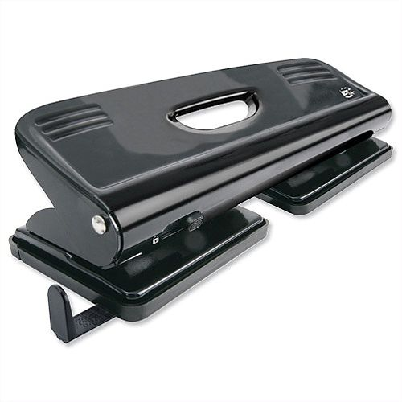
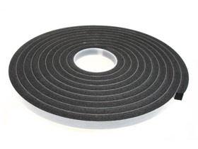

Welcome
Welcome to OpenGuard! Openguard V1.0 is a quick and easy make face shield designed for frontline workers fighting the Covid-19 pandemic. It is designed with readly available parts and tools to make it both fast and affordable to make.
Below is a step by step process on how to create Openguard V1.0. Plans are Open Source and released under the GNU General Public Licence which can be viewed here.
.Prerequisites
There is a number of prerequisites required to prepare the parts. This headband is made from 2mm PVC. This PVC comes in large sheets and is cut using a Punch Machine. This allows for the quick production of parts and 2mm PVC is inexensive and readily available. If you want to mass produce these for your local community one option is to contact a local enginnering business and ask if they can prepare the parts for you. Any punch machine could prepare a large number of the PVC parts. Alternativly CNC machines could cut the sheets using the drawings attached. In general if you ask the question they will at the very least pointing you in the right direction.
For the face shield we used A4 acetate sheets. These are readily available both locally and online. To prepare the sheet we used an A4 4 hole punch to make the holes for fixing. We have rounded the cornors of these sheets as they can be quite sharp. We did this with a scisors but could be done in bulk with a guillotine or punch when available.
The headband padding is made from single sided PVC foam tape. This is less readily available than the other parts. For the most part suppliers of adhesive tapes will supply this. You may also find rolls of it in hardware, plumbing or parts shops. Again, these people will point you in the right directon over a phone call if they dont supply it directly. This is easy cut using a household scissors as it comes in long rolls.
It is also suggested that you use a mechanically assisted rivit gun over a hand riviter. The best will in the world will be broken if you try assemble any more than 20 of these in one go without one.
Step 1 - Materials and Tools

Per mask you will require:
| Qty | Item |
|---|---|
| 1 | Large PVC Headband |
| 1 | Small Headband |
| 3 | Larry |